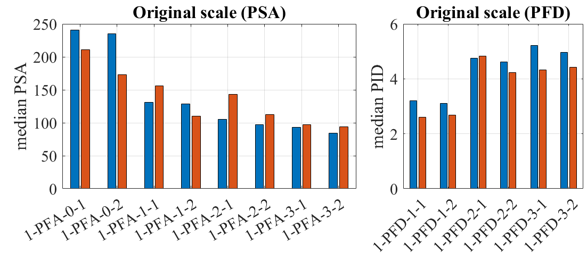

To reproduce the result of this example, the user should first click EVT and Select Records, and then click the RUN button. See the below procedure for details.
This example shows how to replace structural dynamic simulations using a pre-trained Gaussian process (GP) surrogate model for running forward uncertainty propagation (Monte Carlo Simulation). The ground motions are selected from the PEER NGA database matching the Design Spectrum of ASCE 7-16 standard.
Fig. 4.10.1 Prediction of response statistics using a surrogate model
Important
This examples uses the surrogate model trained in example 09
We will select 30 samples. If recorded ground motions will be used as input excitation, as in this example, the number of ground motions that will be selected in the EVT tab should match the number of samples specified in this tab. This restriction does not apply when a stochastic ground motion generator is used instead of the recorded ground motions.
Example 09 describes how to train the GP surrogate model and save it as .json format.
When the option “Random sample under prediction uncertainty” is selected, the predictions from GP are random realizations that account for both model uncertainty and a portion of uncertainty in the ground motion time histories (i.e. the remaining uncertainty after given intensity measures (IMs)). Alternatively, when the user is interested in only the mean of the response, disregarding all the uncertainties, the user can select “Median (representative) prediction”.
In EVT tab, PEER NGA ground motion records option is selected. Let us consider the site of interest located at (37.8715, -122.273), of which we would like to select ground motions that follow USGS Uniform Hazard Spectrum (2014 v4.2.0) with return period 2475. Vs30 is assumed 760 m/s. Let us select 30 ground motion time histories that match this spectrum by clicking Select records button. The target response spectrum curve and the selected ground motions will be displayed on the right-hand side panel as shown below.
Fig. 4.10.3.2 EVT tab - selected ground motion records on the response spectrum curve
The list of the selected ground motions is shown in the table.
Fig. 4.10.3.3 EVT tab - temporary records directory and scaling options
The actual time histories are saved in the “Temporary Records Directory”.
Warning
Due to copyright issues, PEER imposes a strict limit on the number of records that can be downloaded within a unique time window. The current limit is set at approximately 200 records every two weeks, 400 every month. Please make sure this limit is not exceeded. Otherwise, the analysis will fail.
Temporary Records Directory is where the downloaded ground motion records are stored. It is recommended to specify a directory here instead of using the default temporary directory, in order to reuse the time history data in future analysis.
Acceleration Components option is used to select the directional components to be used in the analysis. For example, if H1 is selected, single-direction ground motion will be excited to the structure.
The RV tab is pre-populated with the random variables that were used to train the surrogate. Change the distribution of the statistical parameters as desired. In this example, the stiffness is assumed to be distributed around 120 with a standard deviation of 5.
Note that the surrogate modeling is essentially based on “interpolation”. Therefore, the distribution of stiffness should not significantly exceed the training bound. If a sampled stiffness value lies outside of the training range, [50, 150] in this example, the prediction from the surrogate model for that sample is likely not reliable.
Click Run button. The analysis may take several minutes. The RES tab will be highlighted when the analysis is completed
The obtained statistics of responses are shown in the “Summary tab”
Fig. 4.10.5.1 RES tab - summary of response statistics
In the “Data Values” tab, one can plot the histogram and cumulative density function (CDF) of the samples, as well as scatter plots between the input and output of surrogate predictions
Fig. 4.10.5.2 RES tab - cumulative density function
Windows: left-click sets the Y axis (ordinate). right-click sets the X axis (abscissa).
MAC: fn-clink, option-click, and command-click all set the Y axis (ordinate). ctrl-click sets the X axis (abscissa).
In the scatter plot, the gray square markers represent the mean prediction from the surrogate, gray bounds denote the 90% prediction interval, orange bounds denote the 90% confidence interval of the mean prediction, and blue dots represent the sample obtained from the surrogate prediction.
Note
The term “90% prediction interval” is the interval in which the exact “response”, i.e. dynamic simulation output, will fall with 90% probability.
The term “90% confidence interval” is the estimated range of the “mean response”. Therefore, the confidence interval is always tighter than the prediction interval.
[Verification] Only for verification purposes, an additional forward propagation is performed using the exact simulation model instead of the surrogate model, using the exact same ground motion/structural parameters. For this, UQ, GI, EVT, and RV tabs are kept unchanged, and SIM, FEM, and EDP tabs are modified to replace the surrogate with the original model, i.e. for SIM, FEM, EDP tabs, the exact same configuration used in example 09 was used. Below is a comparison of the obtained mean log-EDPs from 30 samples:
The same comparison in the original scale is shown below.

alt:
The image shows two bar charts side by side. On the left, the chart is titled “Original scale (PSA)” and represents the median PSA values, which range from 0 to 250, for different categories labeled 1-PFA-0-1 to 1-PFA-3-2. The bars are arranged in pairs for each category, with colors alternating between blue and brown. On the right, the chart is titled “Original scale (PFD)” and illustrates the median PFD values, which vary between 0 and 6 for categories labeled 1-PFD-1-1 to 1-PFD-3-2, also with alternating blue and brown bars in pairs. Each pair in both charts likely represents a different condition or measurement within the category.
:align: center
:width: 700
:figclass: align-center
Comparison of log-standard deviation
On the other hand, the log-standard deviation of the EDPs from 30 samples is obtained as below.
Fig. 4.10.5.5 Comparing the standard deviation of log-EDP
The estimated medians of EDPs from the surrogate and the original model show in general good agreement. The standard deviation of the surrogate model is larger partly because of the added uncertainty in the surrogate model approximation. The difference in the statistics may also be attributed to the small sample size of 30.
![A complex graphical presentation on a black background. On the left, there is a two-dimensional waveform plot with a red dot indicating a particular point of interest. The center features a three-dimensional bar graph depicting varying heights of bars with a connecting trend line, and red dots scattered at the base, possibly representing data points. To the right, there are abstract shapes including a bell curve and a series of circle diagrams in a vertical arrangement, each with a varying number of circles, perhaps illustrating different datasets or statistical distributions.](../../../../../_images/EE10_main3.png)

![Screenshot of a user interface from a software application, showing the 'Building Model Generator' section with a dropdown menu titled 'Surrogate (GP)' selected. Below it, there is an input field for 'SurrogateGP Info (.json)' with a file path entered and a 'Choose' button to its right. The options section includes 'GP output' dropdown menu with 'Random sample under prediction uncertainty' selected and an unchecked 'Advanced Options' checkbox. To the left, vertical navigation tabs are partially visible with labels 'UQ', 'GI', 'SIM', and 'EVT', where 'SIM' is highlighted.](../../../../../_images/EE10_SIM.png)
![Screenshot of a software interface for seismic analysis with two sections: "Target Spectrum" on the left and "Record Selection" on the right. The "Target Spectrum" section has fields for Type, with "Uniform Hazard Spectrum (USGS NSHMP)" selected from a dropdown menu, Latitude set to 37.8715, Longitude set to -122.273, Edition set to "2014 v4.2.0 (Dynamic)" from a dropdown menu, Vs30 set to "760 (B/C)" with m/s unit, and Return Period set to 2475 years. The "Record Selection" section includes a field for "Number of Records" set to 30, drop-down menus for "Fault Type" with "All Types" selected, and "Pulse" with "All" selected. There are checkboxes for "Magnitude," "Distance," "Vs30," and "D5-95," each followed by an empty text box with units indicated as km, m/s, and sec.](../../../../../_images/EE10_EVT1.png)
![A graph titled "Response Spectra" showing a collection of curves that represent spectral acceleration versus period in seconds. A dense plot of thin grey lines likely represents individual response spectra. There are highlighted lines indicating the mean (thick blue line), mean plus standard deviation and mean minus standard deviation (thin black lines around the mean), and target spectrum (dotted red lines). The axes are logarithmic, with spectral acceleration on the y-axis and period on the x-axis. The graph displays data variability and conformities to a target response spectrum in engineering or seismology.](../../../../../_images/EE10_EVT3.png)
![Screenshot of a computer interface related to seismic activity analysis with a section labeled "Temporary records Directory" displaying a file path, and a table titled "Ground Motion Components" showing entries related to earthquakes, including columns for RSN, Scale, Earthquake, Station, Magnitude, Distance, Vs30, and Hc. Below are additional settings for "Scaling/Selection Criteria" with options for scaling method, selection error weight function, and a blue "Select Records" button at the bottom.](../../../../../_images/EE10_EVT2.png)

{kind=link}
!["Screenshot of a user interface for inputting random variables, showing a sidebar with the labels UQ, GI, and SIM. The main panel is titled 'Input Random Variables' with fields for 'Variable Name', 'Input Type', 'Distribution', 'Mean', and 'Standard Dev'. The variable name 'K' is entered with 'Parameters' selected as the input type, 'Normal' distribution, a mean of 120, and a standard deviation of 5. There are buttons for 'Add', 'Clear All', 'Correlation Matrix', 'Show PDF', 'Export', and 'Import'."](../../../../../_images/EE10_RV.png)
![A screenshot of a statistical analysis interface showing a table with various entries under the headings "Name," "Mean," "StdDev" (Standard Deviation), "Skewness," and "Kurtosis." Each row provides the name and statistical values for a different dataset, with names such as "1-DS575-0-1," "1-PSA(0.5s)-0-1," and "1-SaRatio-0-1." The data values vary across different rows, indicating diverse statistical properties of the datasets. The interface has a left-side navigation bar with shortened titles like "UQ," "GI," "SIM," with "RES" highlighted.](../../../../../_images/EE10_RES1.png)
![A screenshot of a computer interface involving data analysis. On the left side, a vertical navigation menu with options like UQ, GI, SIM, EVT, FEM, EDP, RV, and RES is shown with RES highlighted. In the main pane, there are two tabs: "Summary" and "Data Values." The "Data Values" tab is active, showing a cumulative frequency distribution graph to the left. Next to the graph, there is a grid of data values with headers such as "1-DSS75-0-2," "1-PSA(0.5s)-0-2," "1-SaRatio-0-2," "1-PFA-0-1," and "1-PFA-0-1 Predictions." Below the data grid, there are options to "Save Table," "Save Columns Separately," "Save RVs," "Save QoIs," and "Save Surrogate Predictions." A checkbox labeled "Show surrogate model prediction bounds" is at the top next to the tabs.](../../../../../_images/EE10_RES2.png)
![Screenshot of a computer interface with a scatterplot and a data table. The scatterplot shows various data points with error bars and is labeled with axes "1-SaRatio-0-1" and "1-PJD-3-1." A correlation coefficient of 0.72 is displayed. The data table to the right lists values under headings such as "1-PFA-3-2" and "1-PFD-3-1," with one value highlighted in blue. The interface includes tabs like "Summary" and "Data Values," and buttons for saving the table, columns, RVs, QoIs, and Surrogate Predictions. There is also a checkbox option titled "Show surrogate model prediction bounds."](../../../../../_images/EE10_RES3.png)
![A bar chart titled 'Mean of log EDP' showing two sets of bars for each category on the x-axis labeled with various codes such as '1_PFRA-0-1', '1_PFRA-1-2', '1_PFED-3-1', etc. The categories represent different data groups, and each group has two bars adjacent to each other; one bar is colored blue, labeled 'original', and the other is colored orange, labeled 'surrogate'. The y-axis represents the mean of log EDP with values ranging from approximately -5 to 5. The pattern of the bars indicates a comparison between the "original" and "surrogate" data across the different categories.](../../../../../_images/EE10_RES4_1.png)
![A bar chart comparing the standard deviation of log EDP (Engineering Demand Parameter) between original and surrogate data. The x-axis lists different data sets labeled 1-PFA-0-1, 1-PFA-1-1, and so on, up to 1-PRD-3-1. The y-axis ranges from 0 to 1 in increments of 0.2. Blue bars represent original data, and orange bars represent surrogate data. The bars vary in height, indicating differences in the standard deviation of log EDP for each data set. The orange bars generally appear to show a higher standard deviation than the blue bars.](../../../../../_images/EE10_RES4_3.png)